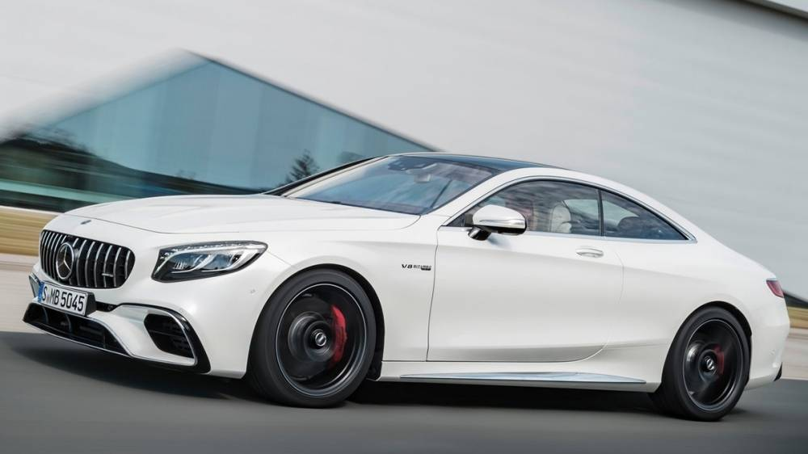

2019 S-Class Coupe外觀導入全新設計跑車風格前後保桿及雙邊四出鍍鉻排氣尾管，前氣壩添加兩道橫式定風翼，與水箱罩的單柵設計呼應，更增加御風前行的律動感。
而車尾亮點莫過於由單邊33個OLED所組成的尾燈，讓光源呈現更為均勻且極具辨識度，並以動態指示表現給予更佳的導引效能，
還可依照駕駛條件與環境亮度，提供不同亮度等級，與LED智慧型頭燈相互匹配，提供最適切的照明。

乍看全新G-Class的外觀設計，會發現在整體比例與線條的走向中，完全不改既有的經典初衷。
但當仔細端倪，將會讚嘆原廠設計團隊的鬼斧神工，相較於先前車款，新G-Class的車身尺碼全面放大，以G 500車型為例，長/寬/高分別增加了53mm、117mm、15mm，軸距長度也拉長40mm，
讓整體車身格局來到4817x1984x1969mm之譜，軸距長度則達到2890mm。
連到首頁
連到第2頁
連到第3頁
連到第5頁